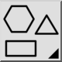

Esta é uma tradução automática.
Barra de ferramentas / Ícone:

Atalho: W, H
Comandos: shapemenu
Polilinha
As ferramentas de forma podem criar linhas e arcos soltos ou uma polilinha fechada. Marque "Create Polyline" (Criar polilinha) para criar uma única entidade de polilinha por forma construída.
Preenchimento
Marque a caixa de seleção "Fill" (Preencher) para criar um preenchimento sólido além do limite da forma.
Raio
Marque a caixa de seleção "Radius" (Raio) para arredondar todos os cantos da forma com o raio fornecido.